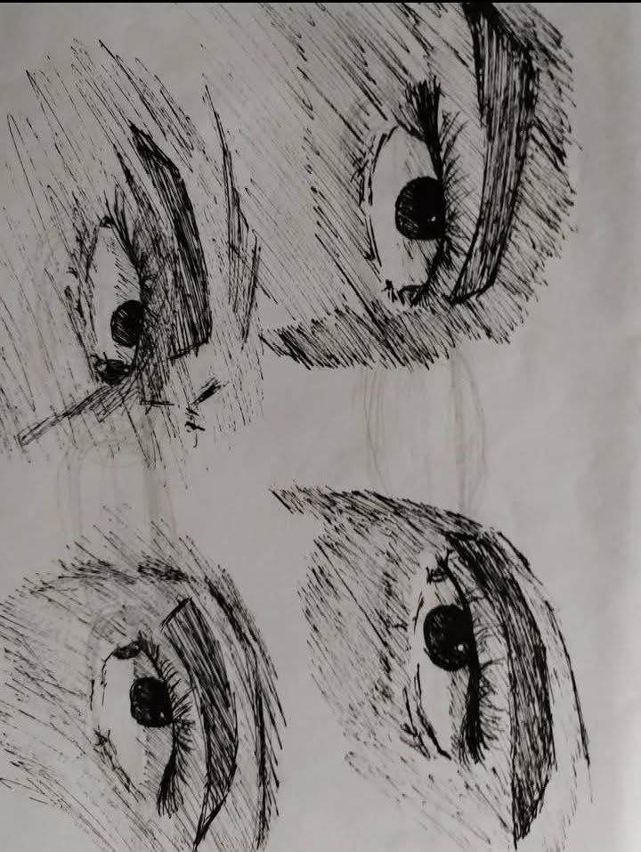

Art is a complex and vague concept for me,
yet I find myself drawn to it. There are many forms of art,
each with its own unique characteristics that appeal to different perspectives.
To me, the term 'art' itself is incomprehensible,
much like many things in the universe;
it is beyond human understanding,
yet people appreciate it without seeking an answer.

"Do eyes truly never lie?" my exact thought as I was sketching those eyes.
if they do,then wny are there such amount of people who said the same thing
and yet got deceived by the very same eyes that they once admired, loved, pursued and trusted?